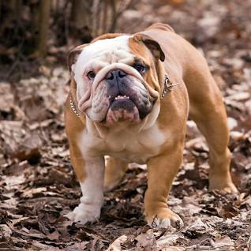

Bulldog
The Bulldog is a British breed of dog of mastiff type. It may also be known as the English Bulldog or British Bulldog. It is a medium sized, muscular dog of around 40–55 lb (18–25 kg).
Learn More
German Shepherd
The German Shepherd or Alsatian is a German breed of working dog of medium to large size. The breed was developed by Max von Stephanitz using various traditional German herding dogs from 1899. It was originally bred as a herding dog, for herding sheep.
Learn More
Golden Retriever
The Golden Retriever is a Scottish breed of retriever dog of medium size. It is characterised by a gentle and affectionate nature and a striking golden coat. It is commonly kept as a pet and is among the most frequently registered breeds in several Western countries.
Learn More